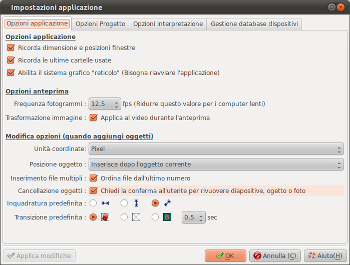
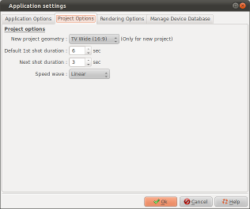
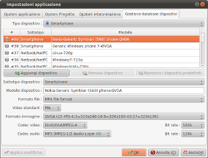

Introduction
La finestra impostazioni
applicazione consente di definire le opzioni per l'applicazione.
Questa finestra è richiamata con il bottone sulla barra degli
strumenti.
Si compone delle 4 schede seguenti:
Opzioni applicazione

Optioni applicazione
| Ricorda dimensione e posizione finestre |
|
| Ricorda le ultime cartelle usate |
|
| Abilita il sistema grafico "raster" (reticolo) | Solo per utenti Linux
:
|
Opzioni anteprima
| Frequenza fotogrammi |
Ridurre questo numero su computer lenti o se l'indicatore per del vostro lettore multimediale è spesso nella zona rossa. |
| Trasformazione immagine (Applica al video durante l'anteprima) |
|
Modifica Opzioni
| Unità coordinate | Questa opzione permette di
selezionare l'unità di misura per le coordinate che
saranno utilizzate nella finestra delle
proprietà. Si può scegliere:
|
| Posizione oggetto | Questa opzione consente di
regolare le posizioni occupate dai nuovi oggetti inserite
nella timeline.
|
| Inserimento file multipli | Questa opzione consente di
regolare il modo in cui sono ordinati i file quando si
selezionano più file in Aggiungi file.
|
| Cancellazione oggetti | Se questa opzione è
impostata, un messaggio di conferma verrà
visualizzato ogni volta che si rimuove un oggetto:
|
| Inquadratura predefinita | Definisce l'inquadratura da
effettuare durante l'inserimento di file:
|
| Transizione predefinita | Definisce la transizione da
inserire tra le diapositive inserite :
|
 I file verranno riformulati in modo che la larghezza
totale del immagine verrà visualizzata
I file verranno riformulati in modo che la larghezza
totale del immagine verrà visualizzata  I file verranno riformulati in modo che l'altezza
totale della immagine vienà visualizzata
I file verranno riformulati in modo che l'altezza
totale della immagine vienà visualizzata  I file verranno riformulati in modo ottimale
I file verranno riformulati in modo ottimale Una transizione scelta a caso dalla libreria
Una transizione scelta a caso dalla libreria Nessuna transizione
Nessuna transizione Transizione dissolvenza incrociata
Transizione dissolvenza incrociataOpzioni progetto
|  |
Nuova geometria progetto | Seleziona la geometria
dell'immagine da utilizzare per la realizzazione dei
progetti. Tre geometrie sono disponibili :
|
| Durata predefinita 1a inquadratura | Definisce la durata predefinita della prima ripresa della diapositiva durante la creazione. | |
| Durata prossima inquadratura | Definisce la durata predefinita delle altre diapositive. | |
| Velocità onda | Definisce la curva di
velocità da utilizzare per le transizioni e le
animazioni:
|
Opzioni di Rendering

Opzioni dispositivo per la modalità di rendering predefinite
| Smartphone |
Seleziona il tipo e il modello predefinito di dispositivo quando si fa clic sul pulsante "Riproduttori e Smartphone" dal "Genera video" del menu |
| Sistema Multimediale | Seleziona il tipo e il modello predefinito di dispositivo quando si fa clic sul pulsante "Sistemi multimediali" dal "Genera video" del menu |
| Per il WEB | Seleziona il tipo e il modello predefinito di dispositivo quando si fa clic sul pulsante "Per il Web" dal "Genera video" del menu |
Opzioni avanzate di rendering predefinite
| Formato file | Seleziona il tipo di file predefinito da utilizzare per il rendering dalla lista proposta. |
| Video standard | Seleziona il video predefinito da utilizzare: PAL o NTSC. |
| Formato | Seleziona l'immagine predefinita da utilizzare per il rendering dalla lista proposta. |
| Codec video | Seleziona il codec video predefinito da utilizzare per il rendering dalla lista proposta. |
| Bit rate |
Seleziona il bit rate predefinito da utilizzare per il video durante il rendering dalla lista proposta. |
| Codec audio | Seleziona il codec audio predefinito da utilizzare per il rendering dalla lista proposta. |
| Bit rate |
Seleziona il bit rate predefinito da utilizzare per l'audio durante il rendering dalla lista proposta. |
Gestione database dispositivi

Questa scheda consente di modificare il database dei profili dei dispositivi. Il database è in realtà composto da due parti:
La lista mostra le categorie e i tipi di dispositivi presenti nel database.
 Aggiungere
dispositivi: Consente di creare un nuovo dispositivo che
verrà aggiunto al database.
Aggiungere
dispositivi: Consente di creare un nuovo dispositivo che
verrà aggiunto al database.
 Rimuovere
dispositivi: Consente di eliminare un dispositivo.
Rimuovere
dispositivi: Consente di eliminare un dispositivo.
 Ripristina al
predefinito: Annulla le modifiche apportate su un dispositivo
definito nel database predefinito di ffDiaporama
Ripristina al
predefinito: Annulla le modifiche apportate su un dispositivo
definito nel database predefinito di ffDiaporama
Sottotipo dispositivo: consente di selezionare la categoria in cui è classificata l'attrezzatura
Modello dispositivo: Inserisci qui il nome del dispositivo (campo libero di inserimento testo)
Quindi inserire tutti i parametri necessari per il rendering video che devono essere associati al profilo del dispositivo (formato file, standard video, ecc.)
Questa scheda consente di modificare il database dei profili dei dispositivi. Il database è in realtà composto da due parti:
- Il database di default (fornito con ffDiaporama). Questi dispositivi sono registrati nel file di configurazione globale di ffDiaporama.
- I dispositivi che puoi modificare o aggiungere. Questi sono registrati nel file di configurazione personale.
La lista mostra le categorie e i tipi di dispositivi presenti nel database.
 Dispositivi preceduti da questa icona
sono definiti nel database predefinito.
Dispositivi preceduti da questa icona
sono definiti nel database predefinito. Dispositivi
preceduti da questa icona sono quelli definiti da voi
stessi, o quelli del database predefinito che avete
modificato.
Dispositivi
preceduti da questa icona sono quelli definiti da voi
stessi, o quelli del database predefinito che avete
modificato.
Aggiungere
dispositivi: Consente di creare un nuovo dispositivo che
verrà aggiunto al database.
La creazione di un nuovo
dispositivo è realizzata in 3 fasi:
1- È innanzitutto necessario creare un dispositivo
2- Si definiscono i vari parametri
3- Si fa clic sul pulsante "Applica modifiche" per registrare i parametri
1- È innanzitutto necessario creare un dispositivo
2- Si definiscono i vari parametri
3- Si fa clic sul pulsante "Applica modifiche" per registrare i parametri
Rimuovere
dispositivi: Consente di eliminare un dispositivo.
Si noti che è possibile
eliminare solo i dispositivi che si è creato - quelli
che mostrano l'icona
Ripristina al
predefinito: Annulla le modifiche apportate su un dispositivo
definito nel database predefinito di ffDiaporamaSottotipo dispositivo: consente di selezionare la categoria in cui è classificata l'attrezzatura
Modello dispositivo: Inserisci qui il nome del dispositivo (campo libero di inserimento testo)
Quindi inserire tutti i parametri necessari per il rendering video che devono essere associati al profilo del dispositivo (formato file, standard video, ecc.)
Vedi anche
ffDiaporama 1.0